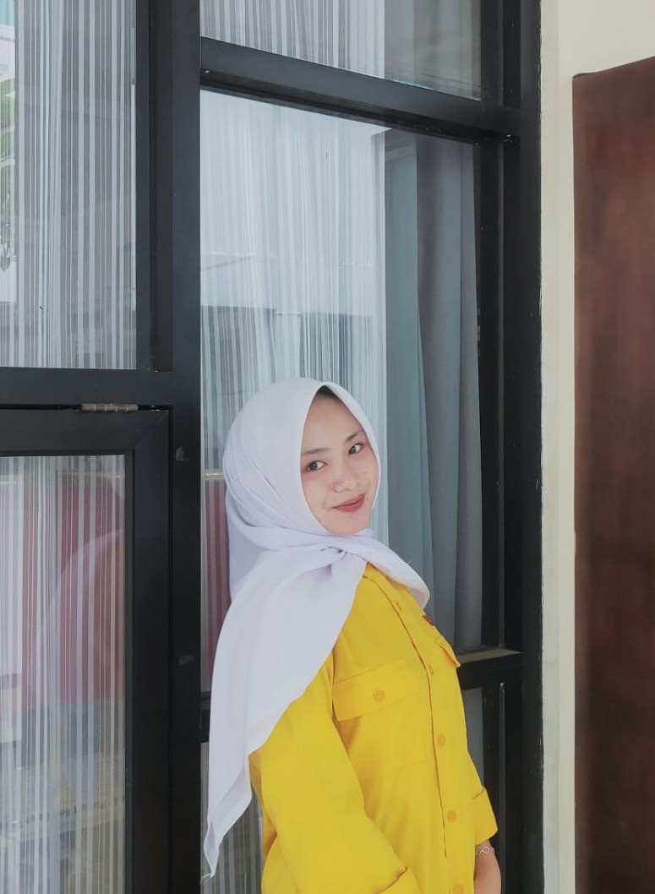

"Halo dan selamat datang! Saya Siti Nur Fitriani, Siswi Jurusan Rekayasa Perangkat Lunak SMKN 1 Kawali yang selalu bersemangat untuk belajar, berkreasi, dan membangun solusi digital lewat teknologi web."
Tentang Saya
Saya merupakan lulusan SMKN 1 Kawali jurusan Rekayasa Perangkat Lunak. Saya memiliki minat yang tinggi pada pengembangan perangkat lunak, khususnya dalam merancang dan membangun aplikasi berbasis web yang fungsional serta mudah digunakan. Selama masa sekolah, saya aktif mempelajari berbagai aspek pembuatan perangkat lunak, mulai dari perancangan alur sistem hingga implementasi basis data. Saya adalah pribadi yang senang belajar hal baru, dapat bekerja sama dalam tim, dan siap menghadapi tantangan di dunia teknologi.
📧 Email: snurfitriani537@gmail.com
📱 WhatsApp: 081573799617
📷 Instagram: @fwrytrrr